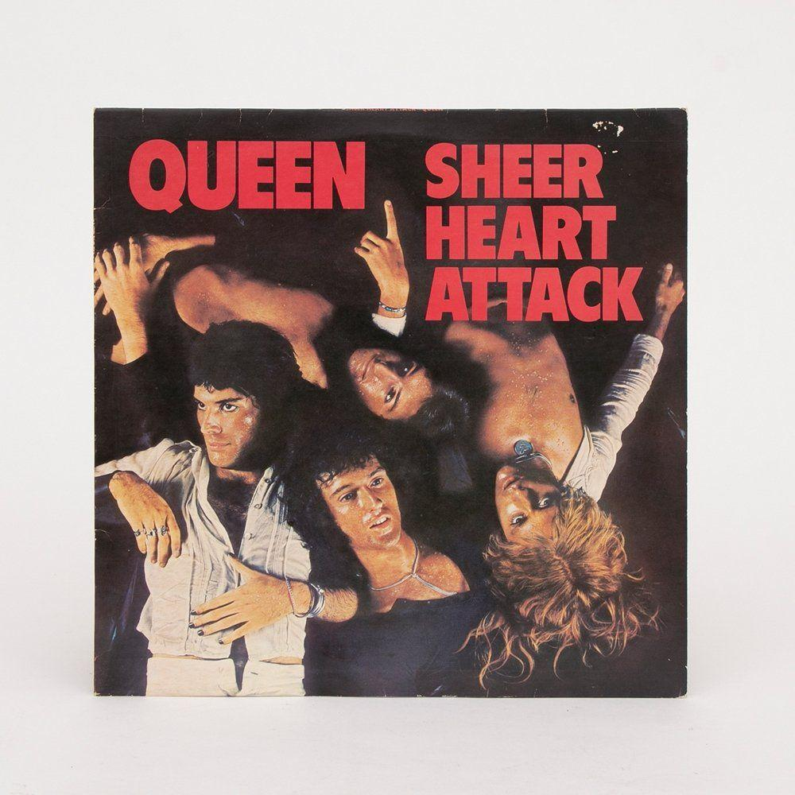
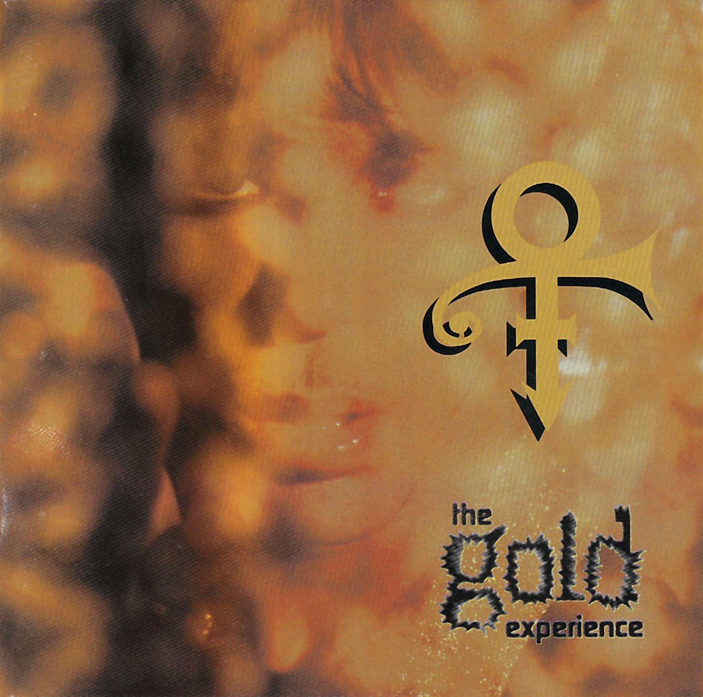
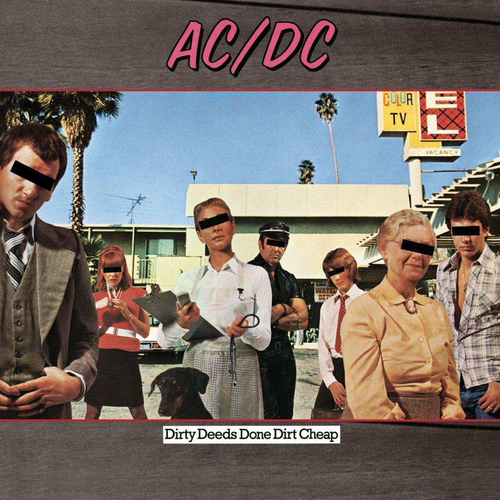

QUEENSheer
Heart Attack
Heart Attack
Sheer Heart Attack
Queen • 1974
Álbum que dá nome à segunda bomba de Killer Queen, de Yoshikage Kira.
Music is a Stand.
Algumas referências são músicas; outras são discos inteiros. Conheça os álbuns relacionados aos nomes dos Stands.

Queen • 1974
Álbum que dá nome à segunda bomba de Killer Queen, de Yoshikage Kira.

Pink Floyd • 1975
Inclui “Shine On You Crazy Diamond”, referência associada ao Crazy Diamond.

The Rolling Stones • 1971
O Stand de Bucciarati faz referência ao disco e ao seu famoso zíper na capa.

Prince • 1995
Referência para Gold Experience, Stand de Giorno Giovanna.

AC/DC • 1976
Referência para o Stand D4C, de Funny Valentine.

The Jimi Hendrix Experience • 1967
Hendrix é referenciado em JoJo por nomes como Purple Haze e Stone Free (nomes de músicas).